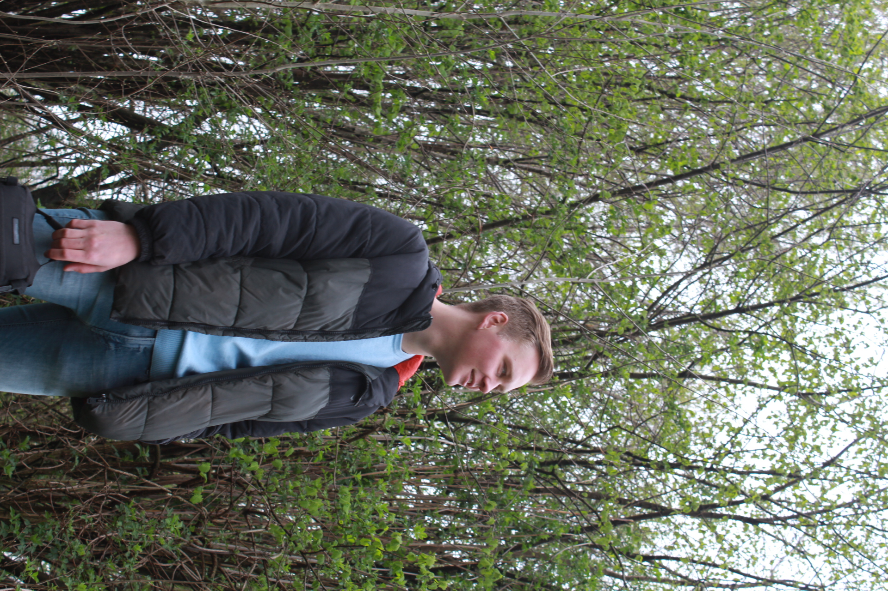
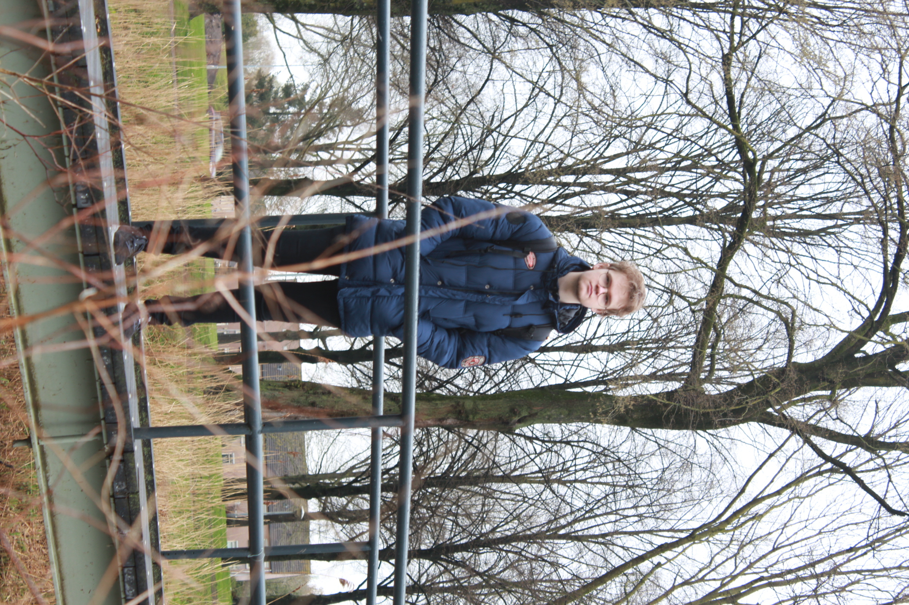
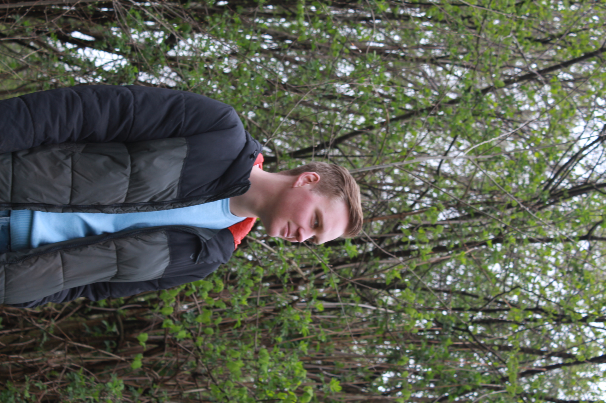
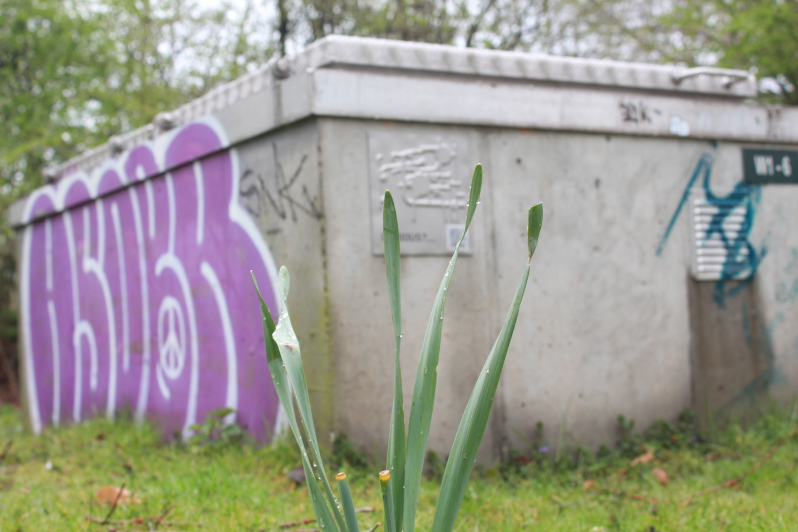

fotografie
Aanpak
Fotografie is een best belangrijk deel van de producten die we voor Ar-Jane willen leveren. Zoals ik al zei heb ik me nog nooit echt goed verdiept op fotografie dus toen ik de kans zag wilde ik hem direct nemen aangezien ik fotografie altijd wel bewonderd heb, alleen zelf nooit echt mee heb gewerkt. Hieronder lees je al mijn vooruitgang omtrent fotografie.
Experimenteren
Na een Canon 6D geleend te hebben van de ISSD ben ik met mijn groepsgenoten Cas en Rens naar TU gegaan om een aantal foto's te maken. Het thema van de foto's moesten natuurgericht en rustgevend zijn dus wij dachten dat TU een redelijk goede locatie was om een gevoel te krijgen voor hoe zo'n high-end camera nou werkt. We hebben geexperimenteerd met posities, foto's van ver af en juist dichtbij, landscape/breedbeeld foto's en portrait foto's. Dit waren een aantal resultaten daarvan.
   De "oefen-fotoshoot"
Na een gevoel gekregen te hebben voor de camera, was het tijd om te kijken naar locaties waar de echte fotoshoot met Ar-Jane plaats zou kunnen vinden. Na gesproken te hebben met een oud-klasgenoot, Thijs, had hij mij geadviseerd om de gaan kijken naar het "Philips de Jonghpark". We hadden op het moment geen andere locaties in onze hoofden om mee te experimenteren dus Cas en ik namen het risico om naar het park te gaan met een camera en heel veel hoop. Toen we uiteindelijk aankwamen bij de locatie wisten we bijna direct dat dit de perfecte locatie zou zijn, er was meer dan genoeg natuur, een hele rustige en redelijk isolerende omgeving, alles viel binnen de criteria voor een "Ar-Jane fotoshoot". We hebben op deze locatie een hele hoop foto's genomen, maar de foto's hieronder waren naar mijn mening het beste.


De echte fotoshoot
Na echt goed geexperimenteerd te hebben met de camera, de positionering ervan en de locatie zijn we direct met Ar-Jane gaan praten over het prikken van een datum voor een fotoshoot met haar. Nadat er telkens zaken tussenkwamen waardoor we de datum moesten verzetten, lukte het om op 25 april een shoot te houden met Ar-Jane in het Philips de Jonghpark. We zijn diep in het bos gegaan en we hebben gebruik gemaakt van verschillende locaties binnenin het bos, verschillende outfits, verschillende lichtvallen en verschillende manieren van het schieten van de foto's. Uiteindelijk had ik ongeveer 160 foto's gemaakt waarvan Ar-Jane een selectie kom maken van favorieten. Maar al met al waren we beiden tevreden met het resultaat. Hieronder zie je een aantal favorieten van Ar-Jane.


Zelfreflectie
Terugblikkend heb ik het eigenlijk echt naar mijn zin gehad achter de camera. Vooraf had ik me nog nooit verdiept in fotografie maar ik ben blij dat ik de kans heb gekregen om hiermee te experimenteren want ik ben zeker tevreden met het eindresultaat en zoals ik al duidelijk maakte, het was oprecht leuk. Het was ook heel makkelijk om met Arjanne te werken en zij kwam zelf ook met ideeen voor de fotoshoot dus dit was over het algemeen een soepel proces die uiteindelijk goede resultaten heeft neergezet. Ik zou me in fotografie en videografie zeker nog verder willen verdiepen.
Feedback
Ik heb feedback gevraagd aan een echte fotograaf genaamd "Ronny Brissa", hij gaf mij over het algemeen zeer positieve feedback. Hij vond dat ik het goed heb gedaan voor mijn eerste fotoshoot en zag er zeker potentie in. Hij gaf mij wel de tip om de volgende keer gebruik te maken van autofocus in plaats van manual focus want er zaten een paar wazige foto's in die anders heel mooi konden zijn. Voor de rest was hij zeker positief. Ar-Jane zelf was ook zeker tevreden met de foto's, zij heeft een keuze aan favorieten kunnen maken en gebruikt de fotos op het moment ook zelf voor haar aankondigingen. Al met al positieve reacties.
© 2022 Yassin Chehlaoui